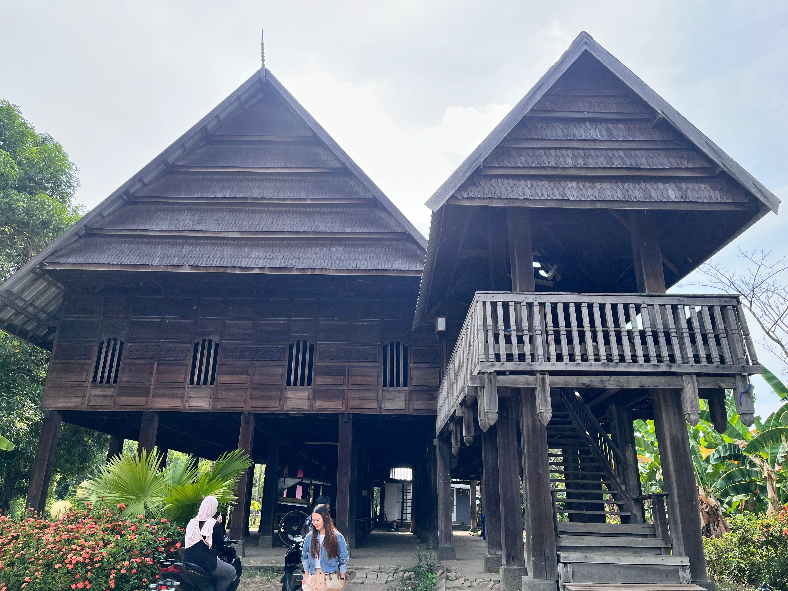

Tur Virtual
Masuki panorama 360° Boyang Mandar dan jelajahi seluruh titik orientasi.
Masuk Tur
Jelajahi Boyang dalam tur virtual 360°. Secara arsitektural, bangunan panggung kayu Suku Mandar ini dirancang kuat berdiri kokoh di atas puluhan tiang penyangga utama yang disebut A'ri. Setiap detail strukturnya, mulai dari pemilihan kayu hingga teknik sambungan, merupakan cerminan identitas Suku Mandar sebagai masyarakat bahari ulung. Strukturnya dirancang secara cerdas agar kuat, lentur, dan adaptif dalam menghadapi tantangan lingkungan pesisir. Boyang berfungsi sebagai balai adat, pusat kegiatan komunal, musyawarah, dan upacara adat.
Masuki panorama 360° Boyang Mandar dan jelajahi seluruh titik orientasi.
Masuk TurPahami konsep geometri, proporsi, dan struktur numerik pada Rumah Adat Mandar.
Baca ArtikelTelusuri analisis proyektif untuk memetakan hubungan ruang pada Boyang.
PelajariLihat model 3D Rumah Adat Mandar untuk detail konstruksi autentik.
Lihat ModelTonton video drone Rumah Adat Mandar dari sudut pandang udara.
Lihat VideoBoyang adalah sebutan untuk rumah adat masyarakat Mandar di Sulawesi Barat. Rumah ini bertipe panggung dengan tiang-tiang penyangga yang tinggi, kolong rumah yang luas, dan atap berbentuk pelana yang megah (disebut tumbaq layar pada bagian penutupnya). Struktur ini tidak hanya estetis tetapi juga fungsional untuk mengantisipasi banjir dan memberikan sirkulasi udara yang baik.
Dalam konteks budaya, Boyang membagi ruang berdasarkan tingkat privasi dan fungsi sosial. Bagian depan (Tappang) bersifat semi-publik untuk menerima tamu, bagian tengah (Lawayang) untuk aktivitas keluarga, dan bagian belakang (Bui) untuk area privat dan dapur. Pembagian ini mencerminkan filosofi Lopa-lopa atau tatanan etika dan kesopanan dalam masyarakat Mandar.
Tur virtual ini menampilkan titik-titik orientasi bernomor agar pengunjung dapat memahami susunan massa, alur sirkulasi yang intuitif, dan hubungan antar ruang yang fungsional dari akses utama tangga (sappana) hingga ke bagian dalam rumah.